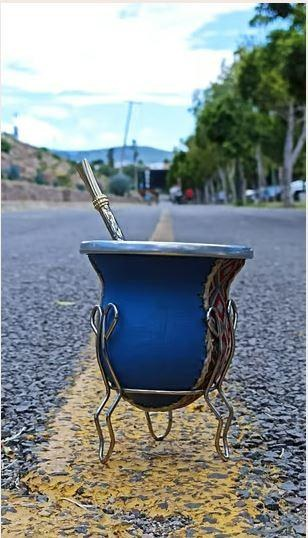

Curar un mate es preparar un mate nuevo para empezar a usarlo. Es un proceso sencillo que mejora el sabor de la infusión y alarga la vida del recipiente.
¿Por qué hay que curar un mate?
Los mates nuevos se curan para que tengan buen sabor y para que no acumulen humedad. Así se evita que aparezcan hongos, moho o mal olor adentro. Un buen curado también ayuda a prevenir grietas.
Si no lo curás, no pasa nada grave, pero el mate va a durar menos y el sabor no va a ser el mismo. Por eso conviene hacerlo siempre que estrenes uno.
¿Qué mates hay que curar?
- Sí: los de calabaza y los de madera. Son materiales porosos, y el curado sirve para sellar esos poros. Si el tuyo es de palo santo, seguí esta guía para mates de palo santo, porque esa madera necesita otro cuidado.
- No hace falta: los de vidrio, metal, cerámica, silicona o plástico. No son porosos, así que con lavarlos antes del primer uso alcanza.

Cómo curarlo, paso a paso
- Lavá bien el interior con agua caliente. Si es de calabaza, dejá el agua caliente adentro unos minutos para que se terminen de desprender las cutículas (los restos de la pulpa) y después retirá lo que se aflojó con una cucharita. Vacialo y limpialo.
- Llenalo con yerba húmeda ya usada. También sirve yerba nueva, pero es preferible aprovechar la usada.
- Agregá un poco de agua tibia y dejalo reposar 24 horas, cuidando que la yerba se mantenga húmeda.
- Vacialo con una cucharita, raspando suavemente el interior para dejarlo bien limpio de impurezas.
- Repetí el proceso una o dos veces más. Cuando el interior queda liso y el agua ya no sale amarga, está listo.
Otras técnicas para curar mates de calabaza y madera
Además del método con yerba, hay dos técnicas tradicionales, pensadas sobre todo para los mates de calabaza. En los dos casos se termina con el paso de la yerba usada.
Con azúcar y brasas de carbón
- Lavá bien el mate con agua caliente.
- Echale dos a cuatro cucharitas de azúcar, según el tamaño. Tapá la boca con la mano y agitalo para que el azúcar se pegue a las paredes.
- Dejalo secar unas horas, hasta que el azúcar se seque.
- Echale dos brasitas pequeñas de carbón encendido, tapá la boca con algo que no te queme y agitalo hasta que las brasas se apaguen. Repetí la operación.
- Terminá con la yerba usada, como en el método paso a paso.
Con alcohol
- Lavá bien el mate con agua caliente.
- Humedecé las paredes interiores con una bebida fuerte, como vodka, whisky, tequila o ron. El alcohol ayuda a evitar que se formen hongos.
- Terminá con la yerba usada, como en el método paso a paso.
Cómo cuidarlo después
- Vacialo apenas termines de usarlo. La yerba húmeda adentro durante horas es la causa principal de los hongos.
- Dejalo secar boca arriba, en un lugar ventilado. No lo guardes cerrado ni húmedo.
- No lo laves con detergente. La calabaza y la madera absorben el olor y el gusto.
Con el mate curado, ya podés preparar tu primer mate.